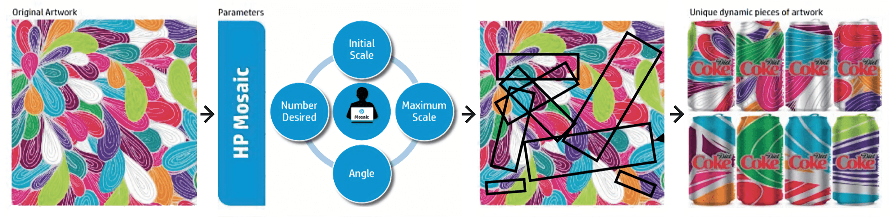
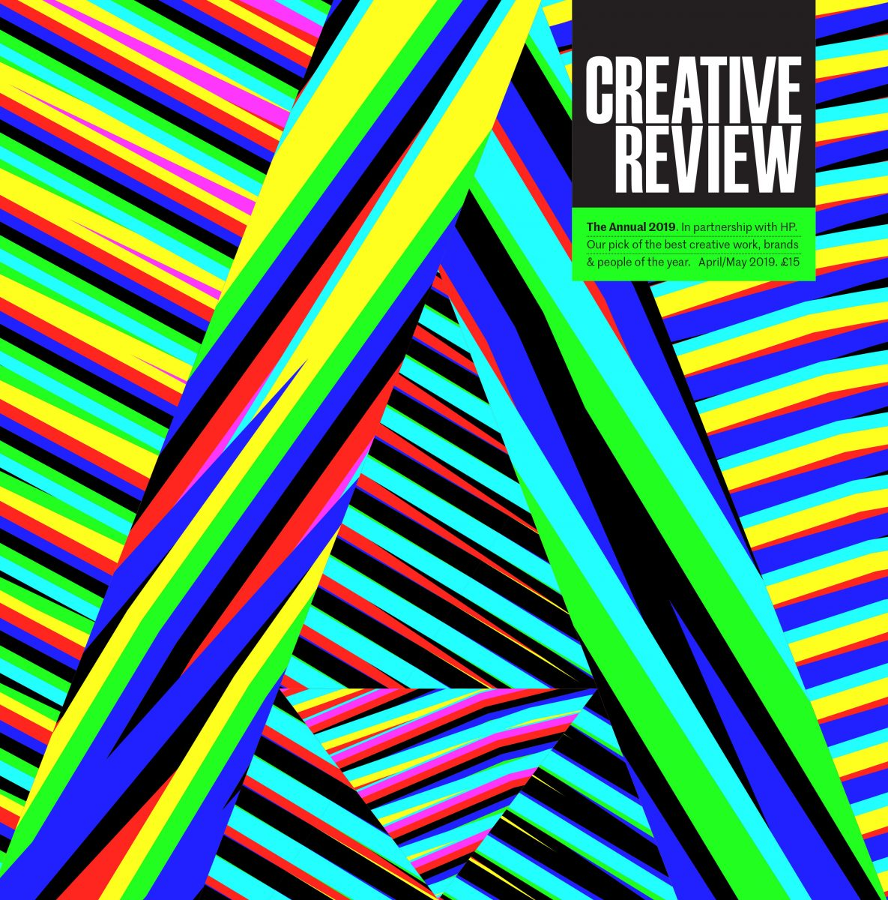
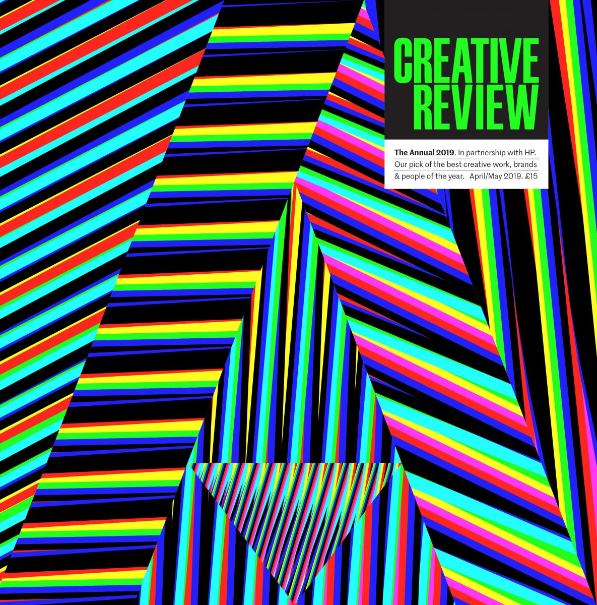
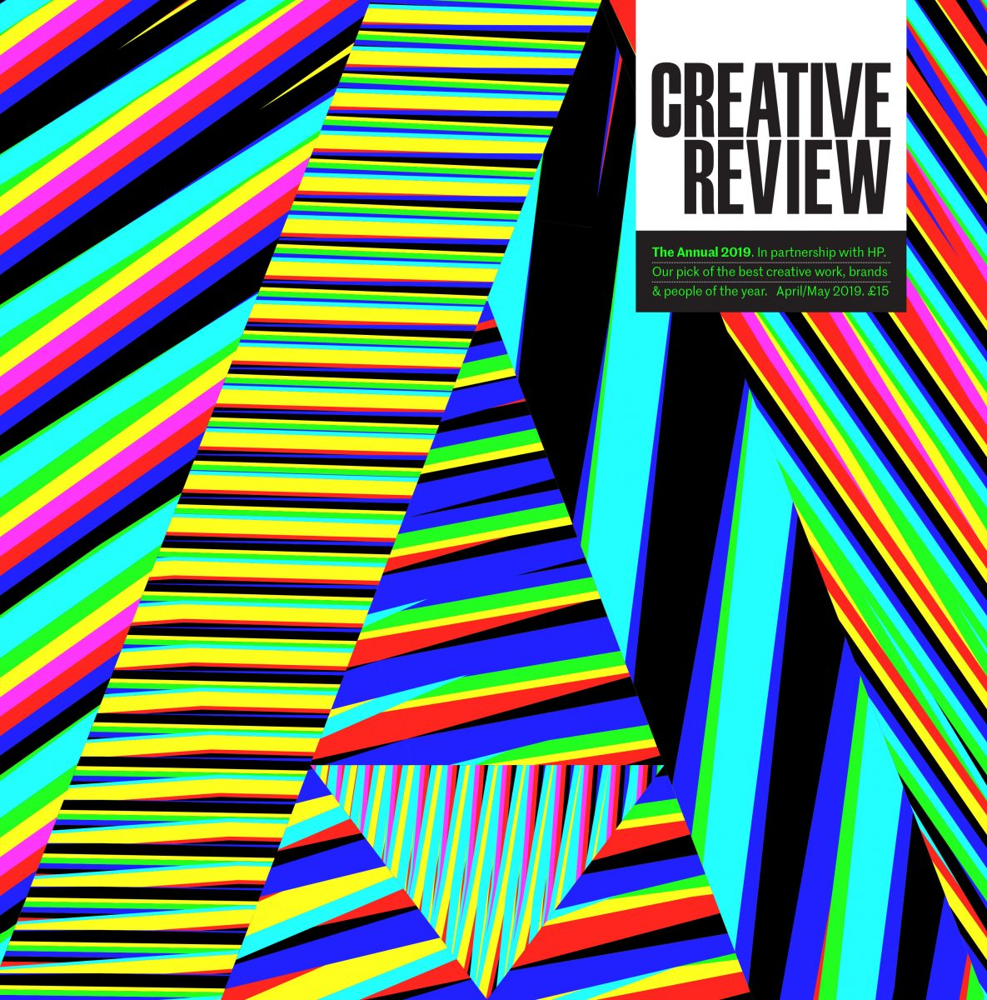
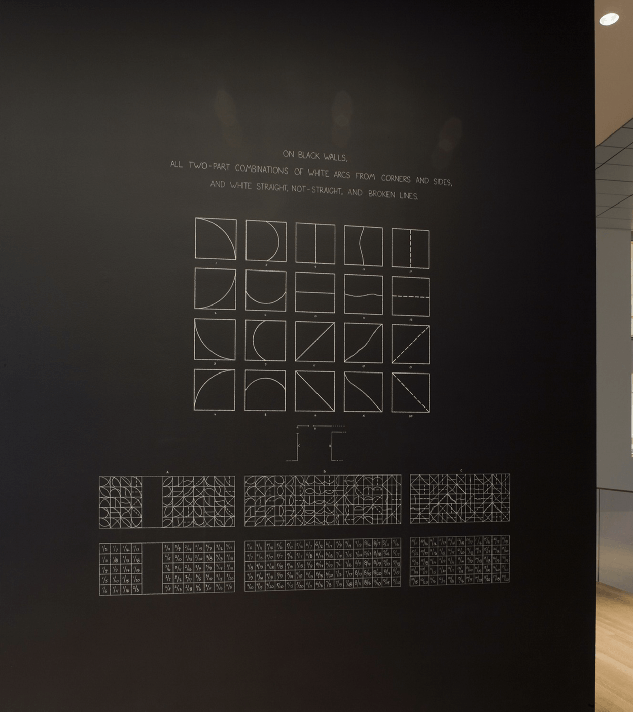
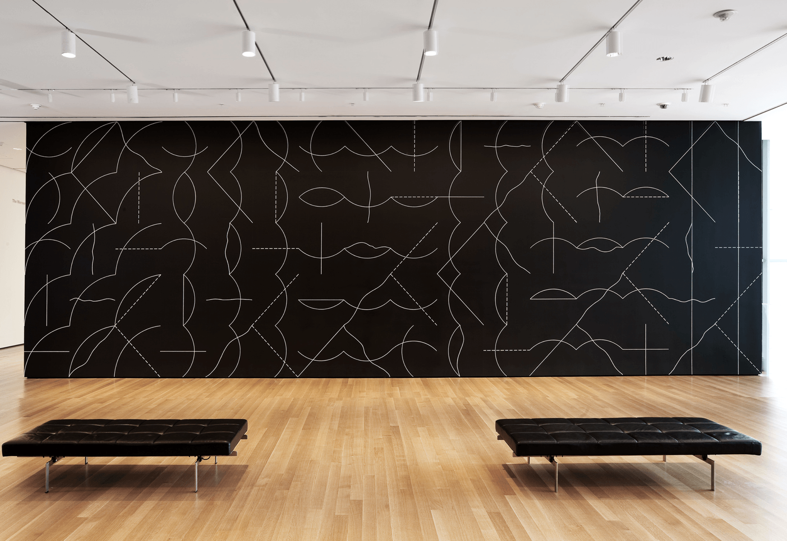
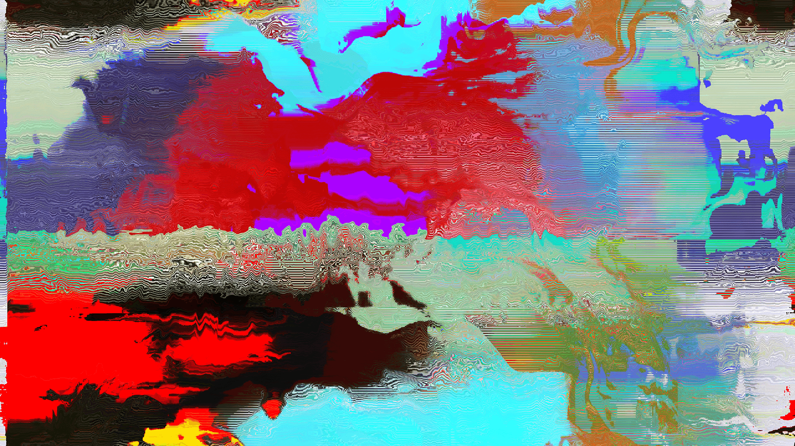
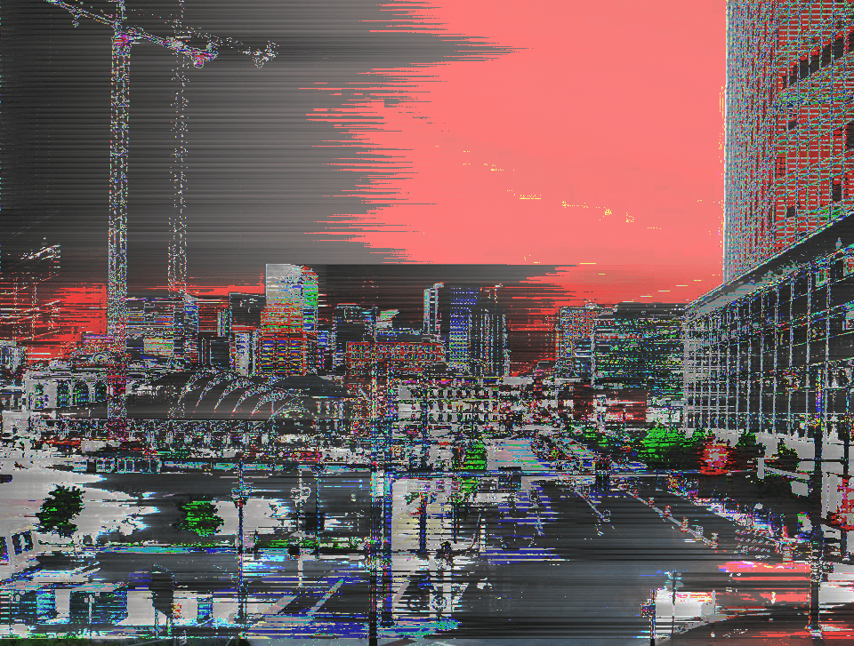
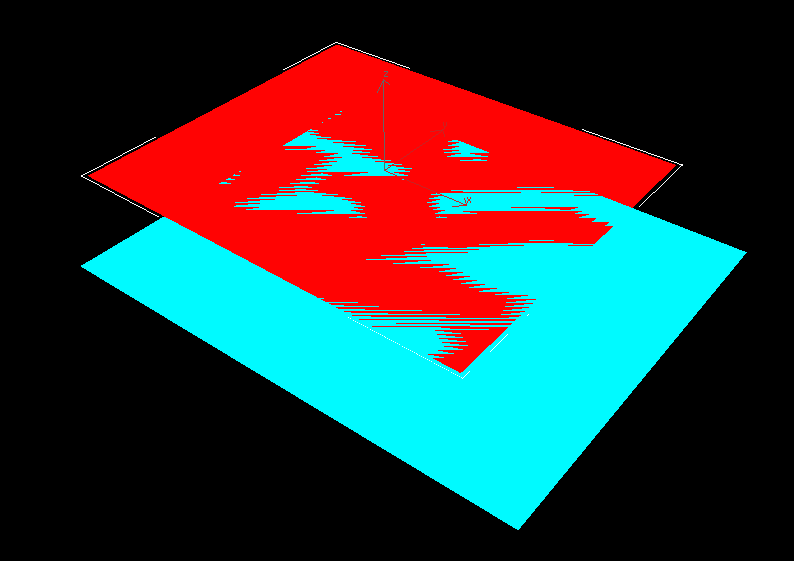

Critical Context Paper
Project Information
Project name: Glitch Room.
Research Question: How can personalisation and customisation be achieved through digital medium to enable the audience to create and experience a unique artwork?
Introduction
The development of technology brings about revolutionary tools which highly improves the efficiency of production, including design making. For example, in the past, if we want to test layout of a book, we might have to find the letterpress components, assemble it and print it out, but now it would be simply done on a computer with design softwares such as Adobe Indesign. With the heterogeneous digital tools, we are able to construct, modify, experiment and bring ideas to life. However, the approach towards design production hasn’t really changed much, as we still only design one or a few posters and have it will printed out with thousands of identical copies in spite that digital printers often have the ability of printing each piece differently. As an audience, after seeing the exact same design on the street in various occasions, it becomes rather boring and repetitive as a lack of dynamic and variation is shown.
There is still room to improve the usage of digital tools in design making process to make something more exciting and fully exploit the advantages of modern production and distribution means. It is possible to have numerous outcomes generated under a single design practice with the help of technology. In this manner, a series of varied designs can take the place of a single outcome.
This paper will be focusing on the idea of diverse designs and exploring a viable way of realising it with the purpose of pursing a better engagement of the audience. In correspondence with the overall production process, the remainder of paper mainly consists three parts — the strategy associated with the goal to achieve, tools and methods to be used in the design process, and form and materiality of the design outcome. Additionally, the practical project developed alongside will also be illustrated through its execution and evaluation.
Chapter 1: Strategy
To tackle the problem of designs being repetitive, ways of realising diverse designs should be explored. Although simply making a number of different design outcomes is doable, there are ways of delivering more relevant messages. The designers can make things according to their understanding of people's liking. Alternatively, the audiences may also make requirements according to their preferences. In other words, both personalisation and customisation can be made respectively to deliver a better outcome.
1.1 Personalisation and customisation explained
Personalisation is the action of designing or producing things to meet people’s individual requirements. The idea of personalisation as a marketing strategy may date back to 1993 where Peppers and Rogers (cited in Nichols, 2018) wrote “When you receive an email that uses your first name in the subject line or sees product recommendations algorithmically chosen 'just for you', or if a website's homepage changes to reflect your past purchase history, location or gender… you've experienced personalisation”.Customisation bears the same aim, but rather than having the creator making all decisions, it allows the users to become ‘co-producers’ of their own, unique product according to particular tastes and needs (Nichols, 2018).
In recent years, personalisation and customisation are being frequently used in business activities and gained great success in many cases. However, personalisation and customisation aren't newly emerging concepts. They have been the norm for most of human history. In fact, the last 200 years have been an exception rather than a natural inevitability due to the invention of markets and mass production (Edman, 2017).
1.2 Historical background: from craft production to mass production
In distant days, we made things to fit our own needs and fondness. All of these forms were one-offs. Each object embodied the quirks of its maker and bore witness to their skill or lack thereof. Handmade products were inferior in their consistency object to object, but this way of making also enabled a fluid process of changes and improvements. Hypothetically, every object was an improvement on the last, becoming more pleasing in proportion, better balanced, higher-performing (Edman, 2017).Nevertheless, as more complex technologies were developed, the need for twinned parts grew acute. Wheels needed to be closely matched to work properly, archers could be more accurate if the shape and mass of their arrows were carefully controlled. As scientific breakthroughs achieved in physics, material science and chemistry, perfect duplication expanded from goods that required it as a functional property to those that offered potential for business efficiency (Edman, 2017).
Meanwhile, the potential size of the market became a primary factor in whether an item would make it into the world. The significant capital commitments of setting up an assembly line or fabricating tooling meant that if a particular scale could not be achieved, or if the demand was uncertain, those needs were simply ignored. The deep capital and domain knowledge required to tool up heavily favours incumbents rather than plucky inventors or small businesses. Pure duplication at a massive scale remains the route that can net the highest profit, and so it persists for physical goods, even in instances where we would be better served by bespoke solutions (Edman, 2017).
1.3 Psychological analysis of personalisation and customisation
In spite that having a personalised or customised product is not always available, the desire persists whether consciously or subconsciously.The desire for personalised products is underpinned by two main motivations — identity and function. Personalising for function focuses on the usability and performance of a product, whereas personalising for identity serves the need for expression and meaning. Within these two motivation areas, five consumer drivers are being identified (Table 1)(Allsopp, 2019). From personalisation, a typically mass-produced object may be stamped with individuality, or consists of higher relevance to personal goal, taste and preferences.
| Identity as Motivation | |
| Express individuality | “I want things that enable me to express my true, unique self…” |
| Convey cultural identities | “I want things that help me to identify with specific cultural and social groups." |
| Facilitate social connections | “I want things that help strengthen my relationships with friends and family." |
| Function as motivatio | |
| Fulfil personal requirements | “I want things that are better suited to my specific needs." |
| Navigate choice overload | “I want things that help me to manage the overwhelming amount of choice." |
⇧ Table 1. Theory of motivations and drives for personalisation by Josh Allsopp (2019).
For customisation, it shares the motivations and drives listed above. But in addition, the opportunity to take part in a process and influence the end result promotes emotional attachment that leads to psychological ownership. When people imbue something with their own labour, their efforts also increase the value of the object (Margalit, 2014).1.4 Digital medium as an exception
As of actually achieving personalisation and customisation nowadays, with advancements in flexible manufacturing technology, production of various commodities becomes viable. Furthermore, the rapid development of 3D printing may even bring about a future of total flexibility that tackles individual demands completely. However, as of now, the necessity of delivering personalised products at a near mass-production price still practically restricts the level of personalisation and customisation.Contrary to the typical notion of mass production, a computer program has many distinct characteristics. Without a physical form, a program is free of expensive manufacturing equipments, factory production schedules and minimum order quantities, leading to a near-miraculous pliability (Edman, 2017).
Although the realisation of a program must be done through a compatible device, they are relatively independent factors. The experience of a device can change dramatically, with merely loading up a different piece of software. The production of different outcomes through code within the same machine inaugurates a more continuous way of building — similar to the vases in craft production era where it becomes better with each build, but also "with added power to supplant or overlay prior incarnations without repeated labour and associated waste". The program can be reworked endlessly, without starting from scratch each time. Once again, rather than dictated by the makers, products may be built to closely match the desires of the actual users (Edman, 2017).
Not only for conventional product manufacturing, but also as of design making, the digital form provides a viable way of achieving personalisation and customisation free of limitations resulted from the materiality of physical objects.
Chapter 2: Methodology
Having discussed the advantages of personalisation and customisation, and the flexibility of a computer program, the remainder of the paper will be aiming at developing a feasible approach which implements personalisation and customisation in design through digital medium. The proposal will be put into practice in the accompanying design project.
2.1 Coding as tool
As a matter of fact, the concept of unique design and added value is not brand new in the art and design area. For instance, a software called HP SmartStream Designer allows designers to create unlimited variations of design through a simple variable data tool (Fig 1) (HP, 2018).

⇧ Fig 1. Illustrated mechanism of HP Mosaic (part of HP SmartStream Designer).



⇧ Fig 2. Cover design for Creative Review Annual 2019 by Alex Trochut. Created with HP SmartStream Designer (2019).
From the process of modularising, extracting and re-assembling, a pre-made design seed file can generate numerous outcomes. Nevertheless, designers can only work with limited options provided, and the results are more or less expected. Contrary to a ready-made software, coding may open up to real randomness and fewer limitations. Going for more abstract output that’s not been deliberately designed by hand becomes viable.Made up of a string of letters, numbers and glyphs arranged in a particular order, code is a set of computational instructions. But code is also a visual medium, like painting or sculpting, that in the right hands can create something optically evocative (Stinson, 2019a).
Although many people may say that having to write code to produce a visual content is a major step backwards from having a software to do it, John Maeda (quoted in Stinson, 2019a) disputes this notion by comparing digital art-making with painting — “You wouldn't have a painter who doesn't know how to mix paint themselves or work within their medium”. In part, it responses to software such as photoshop which allows the designers to make things but meanwhile separates them from the medium in a way which is not always helpful. The idea is about computation as a material rather than a tool. More importantly, the design making is restricted by options made available within the software, which in return may hinder the realization of creative concepts in actual design output (Fry, interviewed by Stinson, 2019a).
Through coding, the designer is given more control throughout the design process by utilising the amount of freedom that coding can deliver. By having an artwork presented digitally, customized changes made in real-time may be achieved.
2.2 Customisation through control options
Opposed to the realisation of personalisation, which is usually reliant on the maker, customisation requires the users to make configurations actively. Situations where one to one services are available, customisation would simply need to be carried out. Nevertheless, mostly the need for mass production still stands. Consequently, it requests a way of achieving customisation within a certain scope to achieve a level of automation. In this case, configurable elements with specified ranges should be introduced to enable customisation based on individuals needs and preferences.As for a design project, having the artwork configured by the audience involves people as valued contributors. The concept of co-creation moves beyond the expert and non-expert relationship between designers and participants. It shapes a more embracing environment within which heterogeneous results may emerge.
2.3 Personalisation through variables
One of the leading exponents of Conceptual art, Sol LeWitt stressed the idea behind his work over its execution. Some of LeWitt’s most integral pieces are his Wall Drawings, in which he explored myriad variations of applying drawn lines onto walls (Artnet, 2019). As an example, his Wall Drawing #260 (1975) (Fig 3) devised a new system of drawing. The liner system, determined in advance by LeWitt, is carried out by others, be they artists, trained assistants, or novice volunteers, based upon his instructions (MoMA, 2008).In the 1967 essay Paragraphs on Conceptual Art, LeWitt wrote “In conceptual art, the idea or concept is the most important aspect of the work. When an artist uses a conceptual form of art, it means that all of the planning and decisions are made beforehand, and the execution is a perfunctory affair. The idea becomes a machine that makes the art”. In short, conceptual art is usually free from the dependence on the skill of the artist as a craftsman, and the idea itself becomes art.
That being said, for an audience, perhaps the fascination of conceptual art is that, although the process is mechanical, the result varies. LeWitt compared his role to a composer who creates a score that may be played by musicians. “The concept or score remains constant, but the wall drawing, like a musical performance, will vary slightly each time it is realised anew (MoMA, 2008)”. The system and variables, together, contribute and shape the outcome which is somewhat relevant to its time, location, and many other factors. And because of this relevancy, in a sense, it can be considered that personalisation is integrated into the work.


⇧ Fig 3. Installation view of 'Focus: Sol LeWitt' exhibition: 'Wall Drawing #260 (1975)'. Photograph by Thomas Griesel (2008-2009) (source).
As we move into the scope of digital art, LeWitt’s approach could not be simply duplicated due to the change in medium. The unambiguity of computational language, artefacts generated from a set of instructions maintains fairly accurate and consistent. Any drawing by hand, even with the intention of replication, is different from another. The variables are welded on the act of execution, whereas a digital artefact can be recreated countless times, winding up exact identical.Is it unfeasible to migrate this methodology to the digital medium? Certainly, we can introduce variables in the system by setting up an algorithm which produces different values upon running the program. But this approach can feel a bit rigid, and may even be considered as a disguised replacement of concept. Notwithstanding, in seek of a parallel solution, it may be helpful if we personify a digital device and impersonate computational tasks, which, in other words, is to think like a computer.
Similar to people, devices also behave and perform differently more or less. The instance where the differences are shown most significantly is when faults and failures occur, which, in some cases, leads to distortion in the visual output. If the deformity is utilized with an appropriate approach, it may be transformed into a tool which generates varied results. In fact, this concept has already been explored by numerous artists and designers whose practice typically sits within the area of glitch art.
2.4 Glitch art as context
By definition, a glitch is an error. Glitch art uses these digital or analogue errors for aesthetic purposes by either corrupting digital data or physically manipulating electronic devices. It re-casts a new light on digital faults and interruptions and turning them into powerful elements of expression.a) Definition
From a scientific standpoint, a glitch is an unexpected spike in electrical current (Wakerly, 2006, cited in Austin, 2017) or the phenomena of an algorithm behaving in a way that is unexpected to either the programmer or the viewer (Moradi, 2009). At first glance, this appears to be a pragmatic and useable definition. For example, if a simple logic-gate circuit or algorithm returns the incorrect response, clearly something that objectively resembles a glitch has occurred (Austin, 2017).However, there are two serious flaws under this approach. Firstly, electrical systems are rarely simple enough to check if a glitch has objectively occurred without specialist knowledge and skills. Secondly, the word ‘unexpected’ implies a relativist subjectivity to the term. In other words, it is possible for a viewer to proclaim that a glitch has occurred within a system which the engineer or programmer has set up to work in precisely that way. The glitch thus embodies a more complex techno-social relationship than merely an objective state of error and is indefinable within only an objective-scientific framework (Austin, 2017).
To understand a glitch, we may start by looking at the historical context. Glitch has been around and in use by artists since the late 1970s and first started to become prominent more or less simultaneously across the world during the 1990s as a result of the faults and failures of digital technology. There are two main factors which contribute to the result of partial and damaged files: the vagaries and interruptions common to dial-up internet access, and the slow speeds of download (Betancourt, 2017). Building on the experience and aesthetics of computer malfunction, glitch artists manipulate electronic devices to explores how they can be gateways into understanding the cultural values that are associated with technology (Brown, 2012).

⇧ Fig 4. Example of glitch art. Red Sun by Mathieu St-Pierre (2015) (source).
b) Value
In the way that punk music was a reaction against the hyper polished commercial rock and roll of the time, glitch art was also a reaction against the hyper-realism portrayed in contemporary media. The process of glitch making empowers people to understand a digital device’s underlying structure and mechanism (Brown, 2012).Besides, the glitch aesthetic has also been established, spread and accepted over the years. In 2009 Rosa Menkman wrote and performed a ‘Glitch Studies Manifesto’ in which she argues that ‘what was once understood as a glitch has now become a new commodity.’ By the 2010s, the glitch aesthetic had been widely appropriated in pop culture in nearly every conceivable form: movies, music videos, advertisements, and video games. As of now, glitch art is still niche, but glitch aesthetic has become ubiquitous (Pieschel, 2014).
Moreover, the value of glitch also stands as it opens up new methodologies for visual creation (Austin, 2017). The glitch offers a disruption to the design process which, may shift the outcome haphazardly to directions which do not converge to the designer’s intention.
2.5 Z-fighting as methodology
There are many methods and techniques which can be utilised to produce glitches. For instance, databending is the process of manipulating a media file of a certain format with software which is designed to edit files of another format (Ahuja and Lu, 2014). As a typical result, distortion in the medium occurs. Although this method provides a great variety of intriguing output, each result often requires manual configuration.Fortunately, there are also malfunctions, such as z-fighting, which offer gateways of producing automatic and constant glitching output.

⇧ Fig 5. Example of a glitch image (right) created with data-bending. Denver by Paul Weiner (2014) (source).
a) Definition and cause
Z-fighting is a phenomenon in 3D rendering that occurs when two or more layers are positioned in identical or proximate positions. The layers 'fighting' with each other to be shown on the screen pixels and causes an overall flickering, noisy rasterisation effect (VisCircle, 2019a) (Fig 6).
The cause of z-fighting is an algorithm called z-buffering, which is used in 3D graphics to mimic the physicality of the real world. Just as the person in front of a TV is what the viewer sees, not the screen. By having an object in the foreground blocking the view behind it, the pixel closer to the viewer is the one being displayed (VisCircle, 2019b).
The cause of z-fighting is an algorithm called z-buffering, which is used in 3D graphics to mimic the physicality of the real world. Just as the person in front of a TV is what the viewer sees, not the screen. By having an object in the foreground blocking the view behind it, the pixel closer to the viewer is the one being displayed (VisCircle, 2019b).

⇧ Fig 6. Example of z-fighting between two layers. Image by Mhoskins (source).
{kind=link}
b) Benefit
Resulting from the mechanism which essentially aims at imitating the real world, z-fighting reflects the materiality of digital artefacts with a flickering effect.The visual output is not only eye-pleasing but also dynamic. It can be highlighted as an engine which generates bespoke designs contrary to before where it was only a mistake, by-product, or degradation of the original output.
Moreover, a range of factors influence the 3D rendering process, which leads to additional variety from the same input. In other words, a single model may be built, but random numbers generated by the algorithm, the device used and resolution of the canvas and can bring about a different output under each circumstance. Happening at random or even tailored to each visit, the factors serve as variables we have been talked about and searched for with the aim of implementing personalisation in a digital artwork. From implanting z-fighting, the visual output not only dynamic and unique but also tailored to individual experiences.
Chapter 3: Format
3.1 The use of web for accessibility, fluidity and flexibility
Over the years, information technologies have fostered new methods of art production and distribution or the creative industry (Zeyl, 2019). A webpage can be used as a container of digital artwork as well as even the work itself. More and more, the web-based format is being adopted by artists and designers due to the following advantages.Firstly, web browsers can be an alternative space to produce and exhibit art outside traditional art establishments like galleries. No longer constricted by the drawbacks of a brick and mortar building, art could be viewed in a website unlimited by geographical scope or time, by anyone, anytime. The internet can be considered as a 'museum without walls' (Stallabrass, 2003, cited in Zeyl, 2019) which expands what an exhibition venue could be, and allows artists and designers to become curators of their own works (Green, 2004). For internet artist Rafaël Rozendaal, his websites benefit from a widespread and placeless existence. As Rozendaal (interviewed by Stosuy, 2017) said, "All my websites together have about 60,000,000 viewers a year, which is very hard to reach with physical work."
Compared to another popular way of distributing digital contents — software or an application, presenting an artwork on a website avoids the disruptive and unnecessary process of people finding, downloading and later on uninstalling an application. On everybody's device, there is always a web browser installed by default, making it much more accessible and time effective than, for instance, an app. Accessing any website simply requires an internet connection.
Moreover, because of the outstanding flexibility of web form, contents can be updated anytime and optimised for different screen sizes, from a small mobile device to a large stadium screen, making it an ideal exhibition space.
Accessibility, fluidity and flexibility are only part of what a webpage has. There are also more advanced technologies that can be coded and implemented into web-based content. Visual reality, for example, alters the reality and surrounds the viewers with more attentive experience as intended by the artist.
3.2 Integrated visual reality for additional immersive experience
As the traditional design disciplines are centred around on the designing of ‘products’, the emerging design disciplines focus on designing for a purpose (Sanders and Stappers, 2008) (Table 2). Accordingly, visual communication design puts increasing focus on designing for experience.| the traditional design disciplines focus on the designing of 'products | while the emerging disciplines focus on designing for a purpose |
| visual communication design interior space design product design information design architecture planning |
design for experiencing design for emotion design for interacting design for sustainability design for serving design for transforming |
⇧ Table 2. A snapshot in time of traditional and emerging design practices by Elizabeth B.-N. Sanders and Pieter Jan Stappers (2008).
As of presenting a digital artefact, visual reality may pass along an immersive digital experience to the viewer. Therefore, it is selected as an additional feature of the accompanying project.Before VR, it has always been the human interfacing with the technology more or less. In order to use a device, people need to interact with provided tools and methods even often it does not feel natural, such as learning to type with a keyboard. Evolving from user interface design, flight and visual simulation, and telepresence technologies, VR took a fresh look at human interaction and finally evolved into a technology that interfaces human (Machover and Tice, 1994). It is unique in its emphasis on the experience of the human participant.
VR focuses the user’s attention on the experience while suspending disbelief about the method of creating it (Machover and Tice, 1994). Compared to what otherwise would be passively perceived by looking at produced objects, VR allows participants to fully immerse as well as, in some cases, interact and participate with the artwork. Experiencing artwork with VR "feels like you are injecting the art straight into your brain neurones" (Athanasiou, cited in Holmes, 2015).
With VR, it also breaks the physical limitation of size compared to conventional object-based methods. It expands the exhibition space and turns it into a canvas which surrounds the viewer 360 degrees with an added dimension of depth.
Overall, adding on top of an accessible method of viewing through web browsers, VR enables audience with VR headsets to experience the artwork on a higher level.
Concluding Statement
After identifying the problem of repetitive designs, we set out the aim of creating original designs that are relevant to each audience for the aim of better engagement. From exploring the history of mass production, we found that although products suited to each individual's needs are not always available, psychologically, people still crave for personalised and customised goods. Therefore it can be used as a strategy against the identified issue. Overlooking the history, we also found that, contrary to physical objects, a computer program is free from many limitations of materiality, and can potentially be used as the form which provides various service to the consumers with a reasonable cost of production and distribution. Following, within the area of digital media, we engaged in setting a practical method. Having found unwanted restrictions of ready-made software on the market, we turned into their underlying tool, coding, through which customisation can be practically implanted. However, at the same time, we also needed to break the accuracy and stability of computer-generated outcomes by utilising glitches. Z-fighting, as a glitch, brings added dynamic to the table and was chosen as the technique for visual generation in this case. Having the method and contents decided in mind, we chose web as format and delivery channel to maintain the digital features as well as ensuring the accessibility of the artwork. Additionally, VR is considered to enable an immersive experience for the viewers.
The findings of the paper will be carried out in the complementary design project correspondingly. Constructed from Hand coding, personalisation feature of the project will be brought to life by the use of z-fighting as the chosen glitch, while customisation being implemented through a 3D scene constructed by the user within provided options. The result will be presented on the web, having VR function enabled meanwhile.
Participants of this project go beyond the notion of “viewers” by participating in the creation process consciously or subconsciously. Instead, they are empowered to become co-creators of the artwork. By having the system accessible online to everyone, and inviting people to create, ultimately, this project aims to contribute to the democratisation art and design. Overall, this project achieves the goal of engagement and originality by personalisation and customisation to a certain extent. However, there are many practical factors which restrict the level of this project. During developing the project, there are many technical difficulties encountered. Without advanced knowledge and skills in coding, a powerful technical support team, or a more extended period of time, it was extremely hard to overcome and resulted in many unfulfilled wishes. Looking into the future, potentially, the project can also be integrated with other activities, such as gaming, to reach a higher level of playfulness and prolonged engagement of the audience.
Bibliography
Ahuja, M. and Lu, D. (2014) What Paris Looks Like with An Echo. Available at: https://www.washingtonpost.com/news/innovations/wp/2014/07/23/what-paris-looks-like-with-an-echo/?arc404=true (Accessed 09 November 2019).
Albrecht, K. (2019) Distinction Machine. Available at: https://distinctionmachine.kimalbrecht.com/ (Accessed 04 September 2019).
Allsopp, J. (2019) The Psychology of Personalisation. Available at: https://www.plan.london/the-psychology-of-personalisation/ (Accessed 22 September 2019).
Artnet (2019) Sol LeWitt. Available at: http://www.artnet.com/artists/sol-lewitt/ (Accessed 09 November 2019).
Austin, M. (2017) The Other Digital: What is the Glitch in Architecture? Available at: http://papers.cumincad.org/data/works/att/caadria2017_182.pdf (Accessed 17 September 2019).
Betancourt, M. (2017) ‘Glitch Art’ as a Movement? Available at: https://cinegraphic.net/article.php?story=20170710104350883 (Accessed 18 June 2019).
Brown, K. (2012) The Art of Glitch. Available at: https://www.youtube.com/watch?v=gr0yiOyvas4 (Accessed 21 September 2019).
Davis, S. M. (1987) Future Perfect. Boston: Addison Wesley.
Edman, A. (2017) A Brief History of Making Things for Humans: On Customization, Empty Innovation & Flexible Hardware. Available at: https://medium.com/hh-design/a-brief-history-of-making-things-for-humans-on-customization-empty-innovation-flexible-hardware-3f6733883b7c (Accessed 19 September 2019).
Greene, R. (2004) Internet Art (World of Art). New York and London: Thames & Hudson.
Holmes, K. (2015) Explore the Abstract World of Subatomic Energy Fields in Virtual Reality. Available at: https://www.vice.com/en_uk/article/kbnkqx/explore-the-subatomic-world-of-energy-fields-in-virtual-reality (Accessed 17 September 2019).
HP (2018) HP SmartStream Designer. Available at: https://www8.hp.com/uk/en/commercial-printers/indigo-presses/smartstream-designer.html (Accessed 21 September 2019).
Irvine, K. (2017) XR: VR, AR, MR — What's the Difference? Available at: https://www.viget.com/articles/xr-vr-ar-mr-whats-the-difference/ (Accessed 22 September 2019).
LeWitt, S. (1967) Paragraphs on Conceptual Art. Published at Artforum Vol. 5, No. 10. New York: Artforum International Magazine.
Machover, C. and Tice, S. E. (1994) Virtual Reality. Available at: https://ieeexplore.ieee.org/abstract/document/250913 (Accessed 17 September 2019).
Margalit, L. (2014) The Psychology of Online Customisation. Available at: https://techcrunch.com/2014/11/11/the-rise-of-online-customization/ (Accessed 20 September 2019).
MoMA (2008) Focus: Sol LeWitt. Available at: https://www.moma.org/calendar/exhibitions/305? (Accessed 22 September 2019).
Nichols, R. (2018) Customization and Personalization: Two Sides of the Same (Millennial) Coin. Available at: https://www.abtasty.com/blog/customization-and-personalization-two-sides-of-the-same-millennial-coin/ (Accessed 19 September 2019).
North of 41 (2018) What really is the difference between AR / MR / VR / XR ? Available at: https://medium.com/@northof41/what-really-is-the-difference-between-ar-mr-vr-xr-35bed1da1a4e (Accessed 22 September 2019).
Nunes, A. (2016) Dune Meets Psychedelic VR in a New Immersive Art Experience. Available at: https://www.vice.com/en_uk/article/53wvjq/dune-psychedelic-vr-immersive-exhibition (Accessed 17 September 2019).
Pieschel, A. (2014) Glitches: A Kind of History. Available at: https://web.archive.org/web/20160812024715/http://www.arcadereview.net/published/2014/11/7/glitches-a-kind-of-history (Accessed 18 June 2019).
Piller, F. (2003) Mass Customization News, Newsletter on Mass Customization, Personalization and Customer Integration. Munich: TUM Research Centre.
Plusnet (2017) What is the Internet and Who Invented It? Available at: https://www.plus.net/home-broadband/content/history-of-the-internet/ (Accessed 21 September 2019).
Roberts, A. (2010) Glitch Safari. Available at: https://www.hellocatfood.com/glitch-safari/ (Accessed 21 September 2019).
Rozendaal, R. (2014) DLD NYC 14 - Everything Always Everywhere. Available at: https://dld-conference.com/videos/QwRL8cxkkCA (Accessed 7 October 2019).
Rozendaal, R. (2017) Rafaël Rozendaal on Streamlining Your Process. Interviewed by Stosuy, B. Available at: https://thecreativeindependent.com/people/rafael-rozendaal-on-streamlining-your-process/ (Accessed 22 September 2019).
Sanders, E. and Stappers, P. (2008) Co-creation and the New Landscapes of Design. Available at: https://www.researchgate.net/publication/235700862_Co-creation_and_the_New_Landscapes_of_Design (Accessed 17 September 2019).
Schade, A. (2016) Customization vs. Personalization in the User Experience. Available at: https://www.nngroup.com/articles/customization-personalization/ (Accessed 19 September 2019).
Stallabrass, J. (2003) The Aesthetics of Net Art. Durham: Duke University Press.
Stinson, L. (2019a) How Computer Code Became a Modern Design Medium — an Oral History. Available at: https://eyeondesign.aiga.org/how-an-mit-research-group-turned-computer-code-into-a-modern-design-medium/ (Accessed 18 September 2019).
Stinson, L. (2019b) This Digital Confetti? It’s What Happens When a Computer Gets Confused. Available at: https://eyeondesign.aiga.org/this-digital-confetti-its-what-happens-when-a-computer-gets-confused/ (Accessed 10 November 2019).
Toffler, A. (1971) Future Shock. New York: Bantam Books, Inc.
Tseng, M. M. and Jiao J. (2001) Mass Customization, Handbook of Industrial Engineering, 3rd Edition. New York: Wiley.
VisCircle (2019a) Guide for Beginners: What is Z-Fighting? Available at: https://viscircle.de/guide-for-beginners-what-is-z-fighting/?lang=en (Accessed 21 September 2019).
VisCircle (2019b) Guide for Beginners: What is Z-Buffering? Available at: https://viscircle.de/guide-for-beginners-what-is-z-buffering/?lang=en (Accessed 21 September 2019).
Vogel, J. (2013) Glitch Talk. Available at: http://jameshconnolly.com/glitchtalk.html (Accessed 18 June 2019).
VRArt (2019) VRArt. Available at: https://vrart.com/ (Accessed 17 September 2019).
Wong, G. (2013) It's Not a Bug, It's a Feature: The Rise of Glitch Art. Available at: https://www.theguardian.com/artanddesign/2013/oct/25/rise-of-glitch-art (Accessed 18 June 2019).
Zeyl, M. V. (2019) A Patronage Model for New Public Art. Available at: https://www.thesitemagazine.com/read/patronage-public-art-rafael-rozendaal (Accessed 22 September 2019).